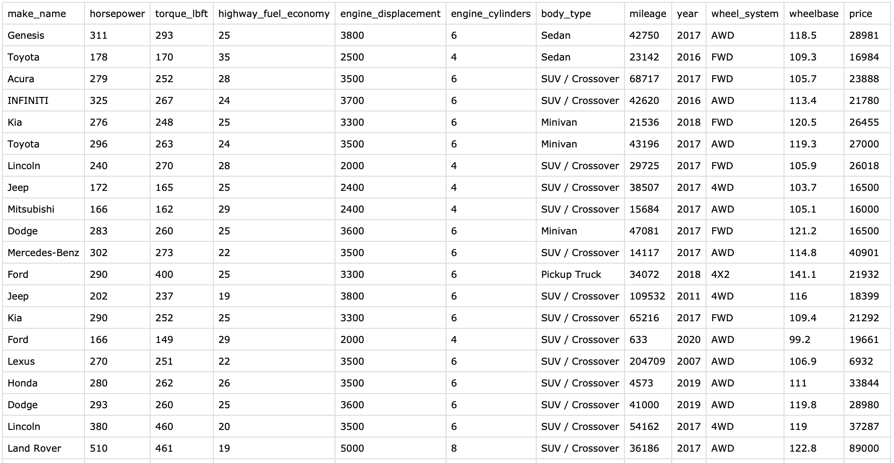
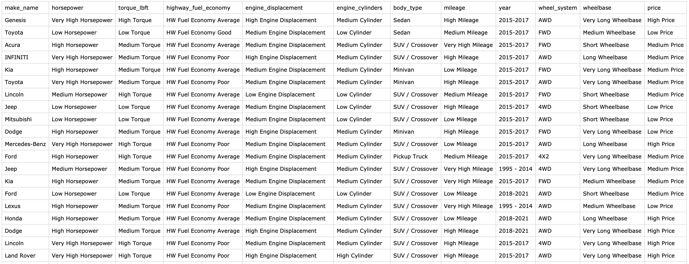

To perform association rule mining on used vehicle data, the given data needs to be converted into transactional data. This method mainly identifies relationships between discrete items (variables in the form of categories). Continuous variables are complex to use directly and need to be discretized. The process of converting used vehicle data into transaction data for association rule analysis can be done as follows:
- 10,000 data points are randomly sampled from the previously preprocessed data to perform smooth association rule mining.
- For association rule analysis, select the features required for analysis. For each feature representing a vehicle, choose the following columns and assign them to a new data frame: (make_name, horsepower, torque_lbft, highway_fuel_economy, engine_displacement, engine_cylinders, body_type, mileage, year, wheel_system, wheelbase, price)
- When the columns have continuous numeric data types, it can be challenging to apply association rules analysis. To overcome this, the data is transformed through discretization. Quantiles are calculated for each feature, and these quantiles are used to divide each variable into multiple bins. String labels are defined for these discretized bins, effectively converting a continuous variable into a categorical one.
- Following this transformation, information such as column names and row numbers is removed to create transactional data, which is then saved as a CSV file.
Below is what the data frame looks like before and after conversion to transaction data. First, the data frame before the conversion consists of continuous numbers in various columns.
Below is a data frame collection with all the continuous number type data discretized.
The above data frame is the result of discretizing a number of numeric variables, most of which were discretized for each variable using the quantile function. If a column was discretized into four categories, the quantiles were typically 0, 0.25, 5, 7.5, and 1. If a column was discretized into three categories, the quantiles were roughly 0, 3, 6, and 10. The exception is year, where vehicle years can be explicitly identified based on the data labels, so year was discretized into three bins: 1995 - 2014, 2015 - 2017, and 2018 - 2021. Also, the number of engine cylinders is a numeric variable. Still, it is treated as a categorical variable, so quartiles are not utilized when discretizing this variable but instead, it is discretized into four categories based on the number of engine cylinders: 1-3, 4-5, 6-8, and 9-12. Below, the quantile ratio or data discretization criteria applied when discretizing each continuous column are indicated.
| Variable | Quantiles | Discretization Criteria |
|---|---|---|
| highway_fuel_economy | 0 | 0 <= Value < 0.23: HW Fuel Economy Poor |
| 0.23 | 0.23 <= Value < 0.66: HW Fuel Economy Average | |
| 0.66 | 0.66 <= Value <= 1: HW Fuel Economy Good | |
| engine_displacement | 0 | 0 <= Value < 0.25: Low Engine Displacement |
| 0.25 | 0.25 <= Value < 0.75: Medium Engine Displacement | |
| 0.75 | 0.75 <= Value < 0.95: High Engine Displacement | |
| 0.95 | 0.95 <= Value <= 1: Very High Engine Displacement | |
| engine_cylinders | - | 1 - 3: Low Cylinder 4 - 5: Medium Cylinder 6 - 8: High Cylinder 9 - 12: Very High Cylinder |
| horsepower | 0 | 0 <= Value < 0.25: Low Horsepower |
| 0.25 | 0.25 <= Value < 0.5: Medium Horsepower | |
| 0.5 | 0.5 <= Value < 0.75: High Horsepower | |
| 0.75 | 0.75 <= Value <= 1: Very High Horsepower | |
| torque_lbft | 0 | 0 <= Value < 0.33: Low Torque |
| 0.33 | 0.33 <= Value < 0.66: Medium Torque | |
| 0.66 | 0.66 <= Value <= 1: High Torque | |
| mileage | 0 | 0 <= Value < 0.25: Low Mileage |
| 0.25 | 0.25 <= Value < 0.5: Medium Mileage | |
| 0.5 | 0.5 <= Value < 0.75: High Mileage | |
| 0.75 | 0.75 <= Value <= 1: Very High Mileage | |
| year | - | 1989 - 2014: 1989 - 2014 2015 - 2017: 2015-2017 2018 - 2021: 2018-2021 |
| wheelbase | 0 | 0 <= Value < 0.25: Short Wheelbase |
| 0.25 | 0.25 <= Value < 0.5: Medium Wheelbase | |
| 0.5 | 0.5 <= Value < 0.75: Long Wheelbase | |
| 0.75 | 0.75 <= Value <= 1: Very Long Wheelbase | |
| price | 0 | 0 <= Value < 0.3: Low Price |
| 0.3 | 0.3 <= Value < 0.7: Medium Price | |
| 0.7 | 0.7 <= Value <= 1: High Price |
| ml_arm_data.R | Data preprocessing source code file for ARM | |
|---|---|---|
| used_cars_data_cleaned_final_ver.csv | Dataset at DataPrep/EDA stage |
# Required libraries library(dplyr) # Load CSV df <- read.csv("used_cars_data_cleaned_final_ver.csv") # Set seed for reproducibility set.seed(2010) # Number of rows to sample num_rows_to_sample <- 10000 # Randomly sample 100 rows from the scaled_data dataframe df_sampled <- df[sample(nrow(df), num_rows_to_sample, replace = FALSE), ] # store CSV write.csv(df_sampled, "used_cars_data_cleaned_final_ver_arm_sampled.csv") df_sampled <- read.csv("used_cars_data_cleaned_final_ver_arm_sampled.csv") # Select the required columns from the dataframe # df_tx <- df_sampled %>% # select(make_name, horsepower, torque_lbft, highway_fuel_economy, engine_cylinders, body_type, fuel_type, mileage, year, has_accidents, wheelbase, price) df_tx <- df_sampled %>% select(make_name, horsepower, torque_lbft, highway_fuel_economy, engine_displacement, engine_cylinders, body_type, mileage, year, wheel_system, wheelbase, price) write.csv(df_tx, file = "used_cars_data_cleaned_final_ver_arm_sampled2.csv", row.names = FALSE) # Select columns to discretize columns_to_discretize <- c( "highway_fuel_economy", "engine_displacement", "engine_cylinders", "horsepower", "torque_lbft", "mileage", "year", "wheelbase", "price") # Define the interval to be discretized breaks <- list( highway_fuel_economy = quantile(df_tx$highway_fuel_economy, probs = c(0, 0.23, 0.66, 1)), engine_displacement = quantile(df_tx$engine_displacement, probs = c(0, 0.25, 0.75, 0.95, 1)), # engine_cylinders = quantile(df_tx$engine_cylinders, probs = c(0, 0.25, 0.75, 0.95, 1)), engine_cylinders = c(0, 3, 5, 8, 12), #quantile(df_tx$year, probs = c(0, 0.1, 0.6, 1)), horsepower = quantile(df_tx$horsepower, probs = c(0, 0.25, 0.5, 0.75, 1)), torque_lbft = quantile(df_tx$torque_lbft, probs = c(0, 0.33, 0.66, 1)), mileage = quantile(df_tx$mileage, probs = c(0, 0.25, 0.5, 0.75, 1)), year = c(1989, 2014, 2018, 2021), #quantile(df_tx$year, probs = c(0, 0.1, 0.6, 1)), wheelbase = quantile(df_tx$wheelbase, probs = c(0, 0.25, 0.5, 0.75, 1)), # price = quantile(df_tx$price, probs = c(0, 0.25, 0.5, 0.7, 1)) price = quantile(df_tx$price, probs = c(0, 0.3, 0.7, 1)) ) # Column discretization and conversion to string labels label_mappings <- list( highway_fuel_economy = c("HW Fuel Economy Poor", "HW Fuel Economy Average", "HW Fuel Economy Good"), engine_displacement = c("Low Engine Displacement", "Medium Engine Displacement", "High Engine Displacement", "Very High Engine Displacement"), engine_cylinders = c("Low Cylinder", "Medium Cylinder", "High Cylinder", "Very High Cylinder"), horsepower = c("Low Horsepower", "Medium Horsepower", "High Horsepower", "Very High Horsepower"), torque_lbft = c("Low Torque", "Medium Torque", "High Torque"), mileage = c("Low Mileage", "Medium Mileage", "High Mileage", "Very High Mileage"), year = c("1989 - 2014", "2015-2017", "2018-2021"), wheelbase = c("Short Wheelbase", "Medium Wheelbase", "Long Wheelbase", "Very Long Wheelbase"), price = c("Low Price", "Medium Price", "High Price") # price = c("Low Price", "Medium Price", "High Price", "Very High Price") ) for (col in columns_to_discretize) { print(col) df_tx[[col]] <- cut(df_tx[[col]], breaks = breaks[[col]], labels = label_mappings[[col]]) } # Change the has_accidents column to factor # df_tx$has_accidents <- factor(df_tx$has_accidents, levels = c(FALSE, TRUE), labels = c("No Accident", "Accident")) # Transform the data into transaction format df_transactions <- df_tx %>% select(make_name, horsepower, torque_lbft, highway_fuel_economy, engine_displacement, engine_cylinders, body_type, mileage, year, wheel_system, wheelbase, price) # Save the data write.csv(df_transactions, file = "used_cars_data_cleaned_final_ver_arm_sampled_transactions.csv", row.names = FALSE) | cs |